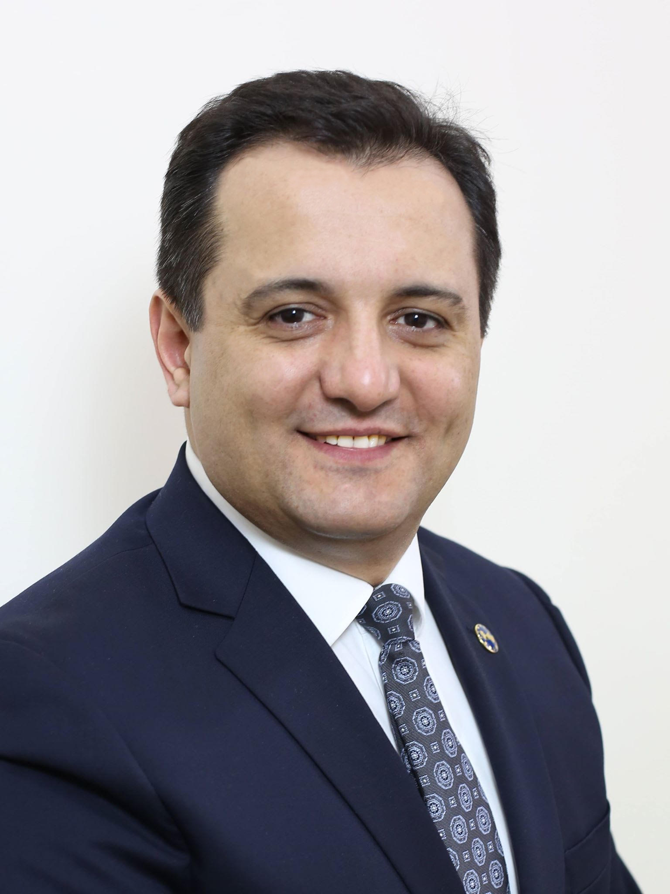
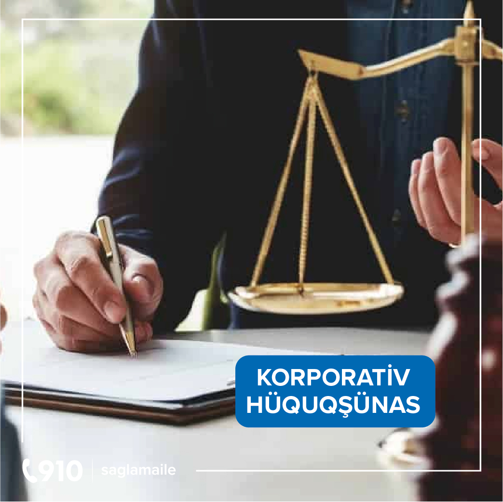

Çağrı mərkəzi
910
Haqqımızda
Geri
Rəhbərlik
Karyera
Lisenziya və mükafatlar
İnkişaf tariximiz

2003-cü ildən “Biz xəstəxana deyil, profilaktik müayinə mərkəziyik” idealogiyası ilə fəaliyyətə
başlayan Sağlam Ailə Tibb Mərkəzinin əsas hədəfi gənclər arasında nikah öncəsi və profilaktik
müayinə mədəniyyətini təbliğ etmək, tibbi maarifləndirmə vasitəsilə gənclərimizin şüuruna təsir
edərək gələcəkdə yarana biləcək xəstəliklərin qarşısını almaqdır.
Tam avtomatlaşdırılmış sistem, Amerika və Avropa istehsalı olan reagentlər, keyfiyyətə xüsusi
nəzarət və elektron idarəetmə sistemi pasiyentlərimizin bizə olan inamını və güvənini daim artırır.
2003-cü ildən “Biz xəstəxana deyil, profilaktik müayinə mərkəziyik” idealogiyası ilə fəaliyyətə
başlayan Sağlam Ailə Tibb Mərkəzinin əsas hədəfi gənclər arasında nikah öncəsi və profilaktik
müayinə mədəniyyətini təbliğ etmək, tibbi maarifləndirmə vasitəsilə gənclərimizin şüuruna təsir
edərək gələcəkdə yarana biləcək xəstəliklərin qarşısını almaqdır.
Hal-hazırda mərkəzimizin Bakı, Gəncə və Sumqayıt şəhərlərində 5 filial və 4 “ASAN XİDMƏT” Mərkəzində
Qanalma məntəqəsi fəaliyyət göstərir.
ISO 9001:2008 keyfiyyət standartına malik mərkəzimiz yarana biləcək xəstəliklərin qarşısını almaq
məqsədilə yüksək texnologiya əsasında fəaliyyət göstərərək, respublikamızdakı tibb müəssisələri
arasında özünəməxsus yerə sahibdir.
Tam avtomatlaşdırılmış sistem, Amerika və Avropa istehsalı olan reagentlər, keyfiyyətə xüsusi
nəzarət və elektron idarəetmə sistemi pasiyentlərimizin bizə olan inamını və güvənini daim artırır.
Mərkəzimizdə göstərilən xidmət çeşidini artırmaq üçün beynəlxalq akkreditasiya olunmuş
laboratoriyalar ilə əməkdaşlıq edirik. Bizə müraciət edən pasiyentlərə geniş çeşidli xidmət
göstərmək məqsədilə dünya tibb sahəsində olan laborator yeniliklər mərkəzimizdə tətbiq olunur.
Görülən bütün işlər və əldə edilmiş nəticələr deməyə əsas verir ki, Sağlam Ailə Tibb Mərkəzi
respublikamızın tibb sektorunda ən stabil və dinamik inkişaf edən tibb mərkəzidir. Mərkəzin etibarlı
və dinamik inkişaf edən tibb müəssisəsi kimi nüfuzu, pasiyentlərə yüksək keyfiyyətli xidmət
göstərilməsi ən vacib məqsədlərə nail olmağa kömək etməklə yanaşı, həm də beynəlxalq səviyyədə öz
sözünü deməyə şərait yaradır. Bunun göstəricisi olaraq mərkəzimiz bir çox mükafatlara layiq görülüb.
Əldə etdiyimiz uğurlarla kifayətlənməyərək daima irəli baxaraq fəaliyyətimizi davam etdiririk.
Sağlam Ailə Tibb Mərkəzinin Direktoru
Vüqar Eyvazov
Hər bir müəssisənin uğurlu fəaliyyəti onun kadr potensialından asılıdır. Öz işinin peşəkarı olan
əməkdaşlardan ibarət kollektivimiz işini mükəmməl şəkildə icra etməyə qadir təcrübəli
mütəxəssislərdir.
Əməkdaşlarımız pasiyentlərə qayğı göstərilməsi, peşəkarlıq, bilik və bacarıqların inkişafı üçün daim
öz üzərində çalışmaq, etika normalarına ciddi riayət edilməsi kimi prinsipləri daima özünə rəhbər
tutur.
Tibb sahəsində qazanılan uğurlarda kiçik də olsa rola sahib olmağımız bizim üçün böyük şərəfdir.
Sağlam Ailə Tibb Mərkəzi olaraq, qazandığımız bütün uğurlarda rolu olan peşəkar komandamıza təşəkkür
edirik.
Vakansiyalar

Vəzifə öhdəlikləri: